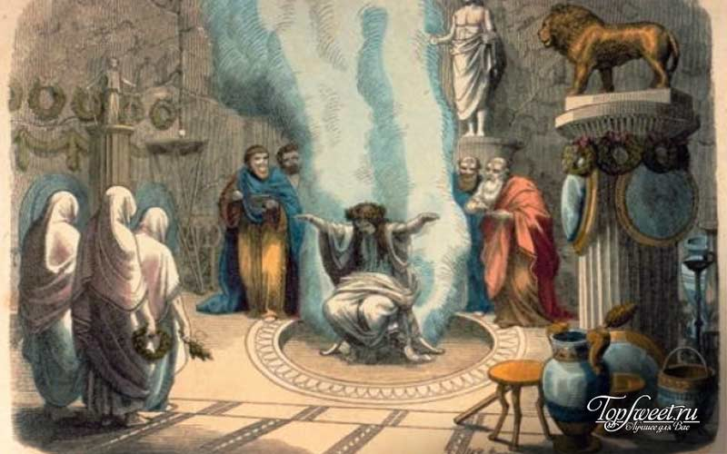

 Первые загадки появились очень давно. В древности они носили мифическое и символическое значение. Загадки часто использовались в древнерусских сказках. Они считались неким испытанием, прохождение которого приводит к исполнению желаний. Правильно отгадать загадку для героев сказок означало найти ключ решения многих проблем. Неумелое и ошибочное разгадывание загадок приводило к самых ужасным последствиям. В Древней Греции существовали оракулы, предсказывающие судьбы. Загадки очень тесно связаны с древнегреческими оракулами. Дело в том, что в предсказаниях оракулов были зашифрованные загадки, разгадав которые можно было узнать свою судьбу. В современном мире загадки утратили такое мистическое значение. К сожалению, теперь разгадывание загадок не сможет помочь людям узнать свое будущее. А вот прекрасно провести время с друзьями за разгадыванием загадок - вполне возможно!
Само слово "загадка" образовано от слова "гадать", которое означало "думать", "размышлять". Загадки бывают разные: детские и взрослые, математические и логические, прикольные и с подвохом, загадки-ребусы и исторические. Они учат нас быть внимательными и активными, развивают наше воображение и любознательность, тренируют память и просто веселят. Много столетий назад люди использовали загадки и просто для общения, если не хотели, чтобы окружающие знали, о чем идет речь. В более поздние времена загадки использовались для испытания мудрости и остроумия, смекалки и находчивости. Загадки часто использовались в древнерусских сказках и считались неким испытанием, прохождение которого приводило к исполнению желаний.
Но самые интересные загадки придумала нам сама природа! В мире столько неразгаданных загадок и тайн, что даже становится немного не по себе! Эти тайны высших миров постоянно кто-то пытается постигнуть, но в очередной раз претерпевает неудачу. Шифры, закодированные послания, таинственные знаки на полях, криптограммы и прочее – все это интригует не только ученых со всего мира, но и простых обывателей. Каждый из нас хотя бы раз в жизни, но задумываются над одной из многочисленных загадок нашей вселенной. А может кому-то еще предстоит ее разгадать?